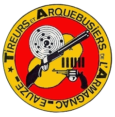

Site de démonstration
Un exemple de site pour le T.A.A.
Ce site est un exemple de ce que pourrait être le site du club. Pour l'instant, il est en ligne sur le domaine royvanmil.fr.
Roy VAN MIL, membre du club, se propose de faire vivre et entretenir ce site.
- 🌐 Il faut seulement acheter un nom de domaine au nom du club (ex. taa-eauze.fr) : environ 15 € pour 2 ans. L'hébergement est gratuit.
- ✉️ Une adresse Gmail sera créée pour le club, pour tous les mails et les comptes.
- 🔑 Le club reste propriétaire de tout le site, des informations et des données. Tout lui est remis sur simple demande, avec les accès nécessaires.

Tireurs et Arquebusiers
de l'Armagnac
Club de tir sportif à Eauze et Bascous (Gers) · affilié FFTir
ℹ️ Infos
180
licenciés au club
Stand principal
Hippodrome de la Bergeyre, route de Bascous
32800 Eauze
Stand 10 m & école de tir
Anciennes arènes, place René Cassin, 32800 Eauze
🕒 Horaires
Mercredi
Samedi
Dimanche
Été9h00 – 18h00
Hiver
1er oct. → 10 fév.15h00 – 18h00
1er oct. → 10 fév.15h00 – 18h00
Stand 10 mMercredi
Sauf chasse en palombière et courses hippiques. Stand 10 m : hors vacances scolaires. Accès réservé aux licenciés du club à jour de cotisation.
🦺 Au stand, obligatoire
🎧Protection auditive
🥽Protection des yeux
🪪Licence visibleautour du cou